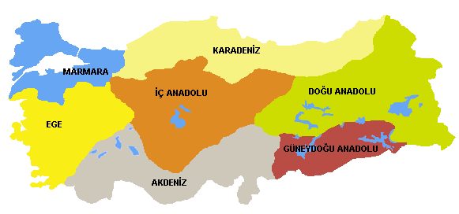

Türkiye’nin Coğrafi Bölgeleri

Doğal, beşerî ve ekonomik özellikler yönünden sınırları içinde benzerlik gösteren
geniş alanlara bölge denir. Sınırları içinde benzerlikleri olan ancak bölgenin diğer yerlerinden
farklı olan küçük alanlara ise bölüm denir.Türkiye coğrafi 7 bölgeye ve 21 bölüme ayrılmıştır.
Coğrafi Bölgelerimiz
- Akdeniz
- Doğu Anadolu Bölgesi
- Ege Bölgesi
- GüneyDoğu Anadolu Bölgesi
- İç Anadolu Bölgesi
- Marmara Bölgesi
- Karadeniz Bölgesi
Doğal, beşerî ve ekonomik özellikler yönünden sınırları içinde benzerlik gösteren
geniş alanlara bölge denir. Sınırları içinde benzerlikleri olan ancak bölgenin diğer yerlerinden
farklı olan küçük alanlara ise bölüm denir. Birinci Coğrafya Kongresinde Türkiye coğrafi 7
bölgeye ve 21 bölüme ayrılmıştır.
|
Bölgeler ve Bölümler
|
| Akdeniz Bölgesi |
- Adana Bölümü
- Antalya Bölümü
|
| Doğu Anadolu Bölgesi |
- Yukarı Fırat Bölümü
- Erzurum-Kars Bölümü
- YukarıMurat-Van Bölümü
- Hakkari Bölümü
|
| Ege Bölgesi |
- Ege Bölümü
- İç Batı Anadolu Bölümü
|
| Güney Doğu Anadolu Bölgesi |
- Orta Fırat Bölümü
- Dicle Bölümü
|
| İç Anadolu Bölgesi |
- Konya Bölümü
- Yukarı Sakarya Bölümü
- Orta Kızılırmak Bölümü
- Yukarı Kızılırmak Bölümü
|
| Marmara Bölgesi |
- Yıldız Bölümü
- Ergene Bölümü
- Çatalca-Kocaeli Bölümü
- Güney Marmara Bölümü
|
| Karadeniz Bölgesi |
- Batı Karadeniz Bölümü
- Orta Karadeniz Bölümü
- Doğu Karadeniz Bölümü
|
|